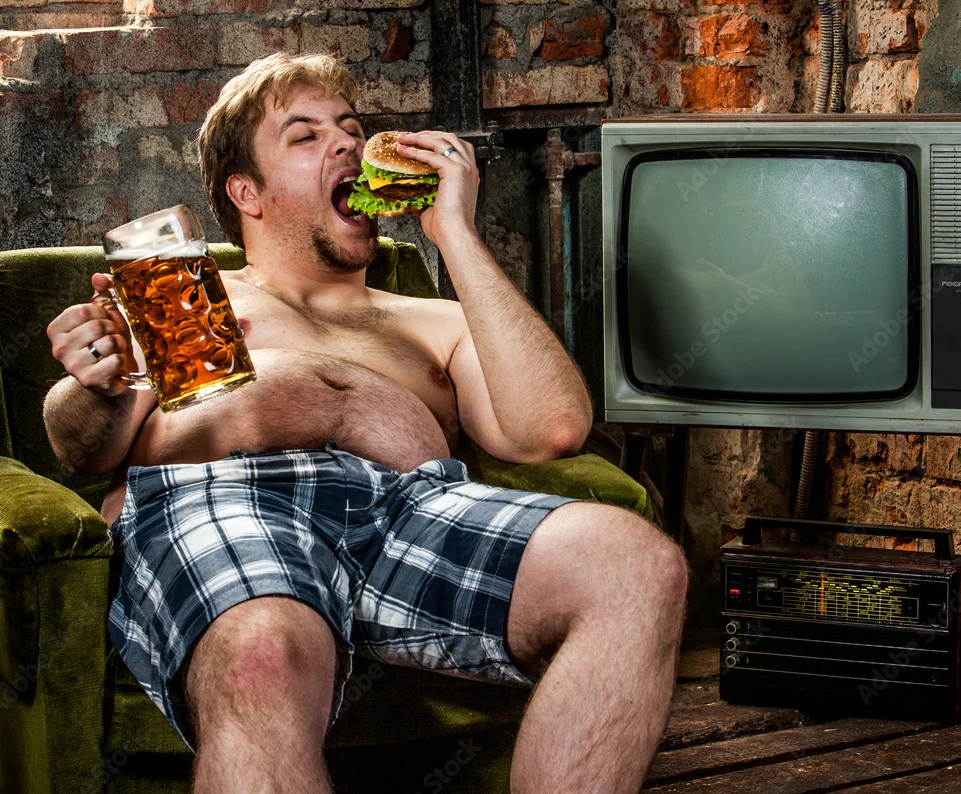

ДАЙДЖЕСТ / BODREEVSHOW
Пивное пузо

Пивное пузо: миф или реальность?
«Пивное пузо» — распространённый стереотип, прочно укоренившийся в массовой культуре. Но действительно ли пиво само по себе приводит к появлению лишнего живота? Разберёмся в вопросе детально — с опорой на научные данные и факты.
Откуда взялся миф?
Образ мужчины с выпирающим животом, держащего в руке кружку пива, часто встречается в кино, мультфильмах и шутках. Этому есть несколько объяснений:
Ассоциации с образом жизни. Пиво нередко употребляют в компании, во время просмотра матчей или вечеринок — обычно в сочетании с калорийными закусками: чипсами, сухариками, колбасками, сыром и т. д.
Культура потребления. Большие объёмы напитка (часто по 0,5 л и более за раз) увеличивают общую калорийность рациона.
Социальный стереотип. Образ «офисного работника средних лет с пивным пузом» стал нарицательным — и закрепился в сознании людей.
Что говорит наука?
Исследования показывают, что прямой причинно‑следственной связи между употреблением пива и образованием жира именно в области живота нет . Разберём ключевые аспекты:
Калорийность пива. В среднем светлое пиво содержит около 40–50 ккал на 100 мл. То есть стандартная бутылка 0,5 л — это примерно 200–250 ккал. Это не так много по сравнению с другими напитками: стакан сладкого лимонада — около 180 ккал; бокал сухого вина — около 120 ккал; латте с сиропом — 250–350 ккал.
стакан сладкого лимонада — около 180 ккал;
бокал сухого вина — около 120 ккал;
латте с сиропом — 250–350 ккал.
Алкоголь и метаболизм. Алкоголь замедляет процесс сжигания жиров: организм в первую очередь перерабатывает этанол, откладывая остальные калории «на потом». Это может способствовать набору веса — но не специфично в области живота.
Влияние на аппетит. Алкоголь, в т. ч. пиво, стимулирует аппетит и снижает самоконтроль. В результате человек съедает больше калорийной пищи, чем планировал.
Гормональный фактор. У мужчин чрезмерное употребление алкоголя (не только пива) может влиять на уровень тестостерона и способствовать накоплению висцерального жира. Но причина — не в пиве как таковом, а в общем злоупотреблении алкоголем .
Генетика и физиология. Распределение жира в организме зависит от наследственности, возраста, уровня физической активности и общего рациона. У одних людей жир откладывается на бёдрах, у других — на животе.
Почему жир скапливается именно на животе?
Абдоминальное ожирение (накопление жира в области живота) вызывают следующие факторы:
избыток калорий в рационе (независимо от их источника);
малоподвижный образ жизни;
хронический стресс (выброс кортизола);
недостаток сна;
гормональные нарушения;
чрезмерное употребление любого алкоголя;
высокое потребление сахара, рафинированных углеводов и трансжиров.
Пиво само по себе не обладает каким‑либо «волшебным» свойством целенаправленно наращивать жир на животе. Проблема возникает при систематическом превышении дневной нормы калорий и сочетании пива с калорийными закусками.
Исследования и статистика
Несколько научных работ изучали связь пива и абдоминального ожирения:
Исследование чешских учёных (где пиво — национальный напиток) не выявило прямой связи между умеренным потреблением пива и увеличением окружности талии.
Крупный обзор в Nutrition Reviews показал, что риск набора веса связан скорее с объёмом употребляемого алкоголя в целом , а не с конкретным его видом.
Данные National Health and Nutrition Examination Survey (США) подтвердили: люди, употребляющие пиво в больших количествах, чаще имеют избыточный вес — но это коррелирует с общим образом жизни и питанием.
Как избежать «пивного пуза»? Практические советы
Если вы любите пиво, но хотите оставаться в форме, придерживайтесь простых правил:
Контролируйте порции. Одна бутылка пива 0,5 л в умеренной компании не навредит. Избегайте многократных повторов.
Выбирайте закуски с умом. Замените чипсы и сухарики на: сыр нежирных сортов; орехи (в умеренном количестве); овощи с хумусом; морепродукты.
сыр нежирных сортов;
орехи (в умеренном количестве);
овощи с хумусом;
морепродукты.
Следите за общей калорийностью. Если планируете вечер с пивом, скорректируйте рацион в течение дня.
Будьте активны. Регулярные тренировки (кардио + силовые) помогут поддерживать метаболизм и уменьшат риск накопления жира.
Соблюдайте режим сна и снижайте стресс. Это напрямую влияет на гормональный баланс и распределение жира.
Пейте воду. Чередуйте бокал пива со стаканом воды — это снизит общую калорийность и уменьшит риск обезвоживания.
Отдавайте предпочтение менее калорийным сортам. Светлое пиво обычно менее калорийно, чем стауты или эли.
Вывод
«Пивное пузо» — скорее миф, чем реальность. Само по себе пиво не вызывает целенаправленного накопления жира в области живота. Причина лишнего веса в этой зоне — комплекс факторов :
избыточное потребление калорий (включая закуски к пиву);
низкая физическая активность;
злоупотребление алкоголем в целом;
особенности образа жизни и генетики.
Умеренное употребление пива (1–2 порции) в сочетании со здоровым питанием и активным образом жизни не приведёт к появлению «пивного пуза» . Главное — разумный подход и баланс.
Так что наслаждайтесь любимым напитком без лишних страхов — но помните о мере!